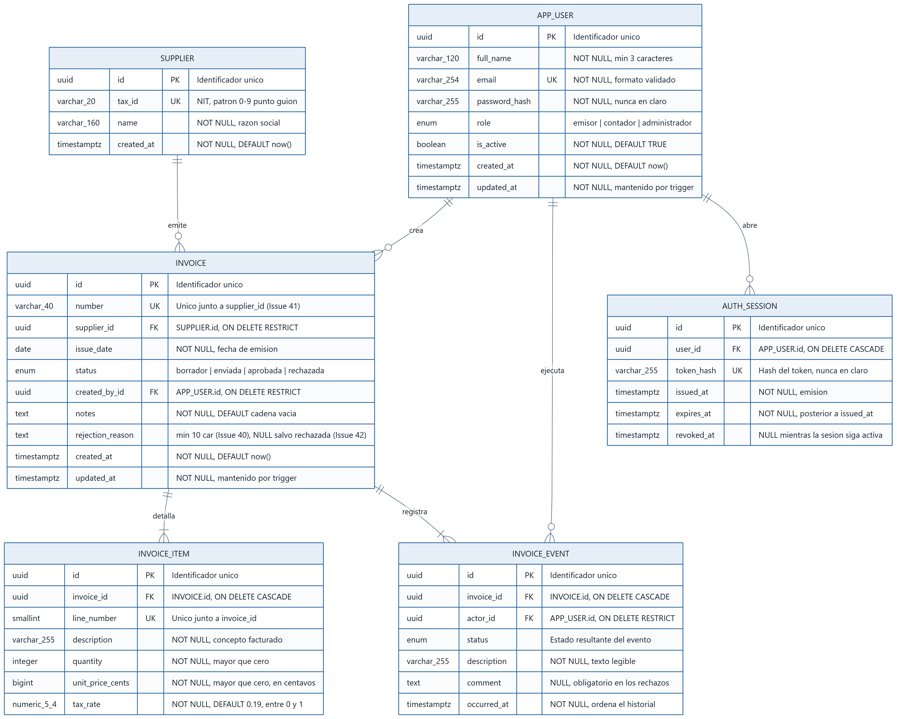

El desarrollo de aplicaciones móviles conectadas a servicios en la nube impone una exigencia que no existe en el software de escritorio tradicional: el modelo de datos debe soportar clientes intermitentes, con conectividad variable, que escriben desde dispositivos distintos sobre la misma información. En ese contexto, la base de datos deja de ser un detalle de implementación y pasa a ser el contrato que garantiza que la información siga siendo coherente sin importar desde dónde se modifique.
El presente documento recoge el diseño y la implementación del modelo de datos de FacturaFlow Mobile Cloud, una solución para la gestión y aprobación de facturas con roles diferenciados. El trabajo abarca las cuatro fases que exige la actividad: el modelado de la base de datos, el diagrama entidad-relación, el diccionario de datos y la implementación en una plataforma en la nube.
Una decisión metodológica atraviesa todo el documento y conviene declararla desde el inicio: el modelo no se diseñó en abstracto, sino que se derivó del dominio real ya implementado en la aplicación móvil. Las reglas de negocio que el modelo expresa como restricciones de integridad no son hipótesis, sino reglas que el equipo corrigió durante el Corte II y que están documentadas como incidencias resueltas en el repositorio del proyecto.
Diseñar e implementar el modelo de datos de la solución móvil FacturaFlow Mobile Cloud, asegurando la integridad, la escalabilidad y la disponibilidad de la información mediante el uso de servicios de base de datos administrados en Google Cloud Platform.
FacturaFlow Mobile Cloud es una aplicación móvil para la gestión, revisión y aprobación de facturas de proveedores. Su propósito es trasladar a un dispositivo móvil un flujo que tradicionalmente ocurre sobre documentos físicos y correo electrónico, dejando trazabilidad de cada decisión.
La aplicación distingue tres roles, cada uno con capacidades diferentes:
| Rol | Capacidades verificadas en el código |
|---|---|
| Emisor | Crea, edita y envía a revisión sus propias facturas. Solo visualiza las que él mismo registró. |
| Contador | Revisa la cola de facturas enviadas; aprueba o rechaza. No puede revisar facturas creadas por él mismo. |
| Administrador | Reúne ambas capacidades y visualiza la totalidad de las facturas de la organización. |
Tabla 1. Roles del sistema y sus capacidades.
El flujo de aprobación define cuatro estados y las transiciones permitidas entre ellos:
borrador ──enviar──▶ enviada ──aprobar──▶ aprobada
│
└──rechazar──▶ rechazada ──corregir──▶ borrador
Las facturas en estado aprobada son terminales. Una factura rechazada puede reabrirse para corrección, lo que la devuelve a borrador. Cada transición queda registrada en un historial de auditoría que no se modifica ni se borra.
Tres reglas del modelo provienen de defectos detectados y corregidos durante el Corte II. Resulta pertinente mencionarlas porque explican decisiones de diseño que de otro modo parecerían arbitrarias:
| Incidencia | Defecto corregido | Regla que impone al modelo |
|---|---|---|
| #40 | Se aceptaba un motivo de rechazo de un solo carácter, de modo que era posible rechazar sin justificar. | El motivo de rechazo exige un mínimo de 10 caracteres. |
| #41 | El número de factura se validaba como único global, impidiendo que dos proveedores usaran el mismo consecutivo. | La unicidad es la pareja (número, proveedor), no el número aislado. |
| #42 | Al reabrir una factura rechazada, el borrador conservaba el motivo del rechazo anterior. | El motivo solo existe mientras el estado es rechazada. |
Tabla 2. Incidencias del Corte II y las reglas que imponen al modelo de datos.
La solución se organiza en cuatro capas, cada una con una responsabilidad delimitada:
┌──────────────────────────────────────────────┐
│ Flutter 3.47 · Dart 3.13 · patrón MVVM │ Cliente móvil
│ Views → ViewModels → Repositories │
└───────────────────┬──────────────────────────┘
│ HTTPS / JSON · token Bearer
┌───────────────────▼──────────────────────────┐
│ Django 5.2 + Django REST Framework 3.16 │ API REST
│ Reglas de negocio · permisos · auditoría │
└───────────────────┬──────────────────────────┘
│ psycopg 3 · TLS obligatorio
┌───────────────────▼──────────────────────────┐
│ PostgreSQL 17 sobre Google Cloud SQL │ Persistencia
│ Integridad referencial · CHECK · índices │
└──────────────────────────────────────────────┘
La aplicación móvil implementa el patrón MVVM. Las vistas no conocen la implementación concreta del origen de datos: dependen de interfaces de repositorio que se resuelven por inyección de dependencias. Esta decisión permite que la aplicación funcione en modo demostración —con datos en memoria— o contra el servidor real, sin modificar una sola línea de la interfaz de usuario.
El backend concentra las reglas de negocio, la autenticación por token, los permisos por rol y la persistencia. Centralizar la validación en el servidor evita que un cliente desactualizado pueda introducir datos que violen las reglas del dominio.
La elección de PostgreSQL responde a las características del dominio. La información de facturación es intrínsecamente relacional: una factura pertenece a un proveedor, la registra un usuario, contiene líneas de detalle y acumula eventos de auditoría. Estas relaciones deben mantenerse íntegras bajo cualquier circunstancia, y un motor relacional las garantiza mediante llaves foráneas y transacciones ACID, sin delegar esa responsabilidad al código de aplicación.
Antes de modelar se identificó qué información debe persistir el sistema y bajo qué condiciones. El análisis partió de las funcionalidades efectivamente implementadas en la aplicación móvil.
| Requerimiento | Necesidad de persistencia | Implicación para el modelo |
|---|---|---|
| Autenticación por rol | Usuarios con credenciales y un rol que determina sus permisos. | Entidad de usuario con rol restringido a un conjunto cerrado de valores. |
| Registro de facturas | Documento con número, proveedor, fecha, líneas de detalle y notas. | Entidad de factura con relación a proveedor y a sus líneas. |
| Identificación del proveedor | Razón social y NIT, reutilizados entre facturas. | Entidad propia de proveedor; evita repetir los datos en cada factura. |
| Cálculo de importes | Cantidad, precio unitario y tasa de IVA por línea. | Importes en centavos como enteros, para eliminar el error de redondeo. |
| Flujo de aprobación | Estado actual de cada factura y transiciones permitidas. | Atributo de estado con dominio cerrado y restricciones de coherencia. |
| Auditoría | Quién hizo qué, cuándo y con qué comentario. | Entidad de eventos de solo inserción, nunca modificada. |
| Sesiones móviles | Token emitido al iniciar sesión, con caducidad. | Entidad de sesión que almacena el hash del token, nunca el token. |
Tabla 3. Requerimientos de información y su implicación sobre el modelo de datos.
El modelo conceptual describe qué información existe y cómo se relaciona, con independencia de cualquier motor de base de datos. Responde a la pregunta del negocio, no a la de la implementación.
| Entidad | Propósito en el dominio |
|---|---|
| Usuario | Persona que accede al sistema. Su rol determina qué acciones del flujo puede ejecutar. |
| Proveedor | Organización que emite las facturas, identificada de forma única por su NIT. |
| Factura | Documento de cobro con un estado dentro del flujo de aprobación. |
| Línea de factura | Concepto facturado, con cantidad, precio unitario e impuesto. |
| Evento de factura | Registro inmutable de una transición del flujo de aprobación. |
| Sesión | Autenticación activa de un usuario desde un dispositivo móvil. |
Tabla 4. Entidades del modelo conceptual.
En la implementación inicial, el nombre y el NIT del proveedor eran atributos de la factura y se repetían en cada registro. El análisis de la incidencia #41 reveló que esa decisión era incorrecta: al establecerse que el número de factura es un consecutivo que lleva cada proveedor, el proveedor adquiere identidad propia dentro del modelo. Un atributo repetido no puede ser parte de una clave de unicidad compuesta sin introducir anomalías de actualización.
Separar el proveedor como entidad elimina la redundancia —corrigiendo una violación de la tercera forma normal—, evita que el mismo NIT aparezca con razones sociales distintas y permite expresar la regla de unicidad de forma directa.
El modelo lógico traduce las entidades conceptuales a estructuras tabulares, definiendo identificadores, atributos con su dominio y restricciones. Sigue siendo independiente del motor concreto, pero ya adopta el paradigma relacional.
Todas las entidades utilizan como clave primaria un identificador universal único (UUID) en lugar de un entero autoincremental. La elección responde a un requisito del contexto móvil: un cliente puede generar el identificador de un registro antes de tener conectividad, lo que permite trabajar sin conexión y sincronizar después sin riesgo de colisión. Un entero secuencial exigiría un viaje al servidor para asignar el identificador.
Los atributos rol y estado admiten un conjunto finito y conocido de valores. Se modelan como tipos enumerados, de modo que el motor rechaza cualquier valor fuera del dominio sin necesidad de una tabla de catálogo adicional ni de una validación en el código.
| Restricción | Entidad | Regla que expresa |
|---|---|---|
| Unicidad compuesta | Factura | (número, proveedor) — incidencia #41. |
| Unicidad simple | Usuario, Proveedor, Sesión | Correo, NIT y hash de token no se repiten. |
| Longitud mínima | Factura | El motivo de rechazo exige 10 caracteres — incidencia #40. |
| Coherencia estado-motivo | Factura | El motivo existe si y solo si el estado es rechazada — incidencia #42. |
| Valores positivos | Línea de factura | Cantidad y precio unitario mayores que cero. |
| Rango | Línea de factura | La tasa de impuesto se mantiene entre 0 y 1. |
| Orden temporal | Sesión | La caducidad es posterior a la emisión. |
Tabla 5. Restricciones de integridad del modelo lógico.
Las llaves foráneas declaran explícitamente qué ocurre al eliminar el registro referenciado. La elección no es uniforme, porque las entidades tienen naturalezas distintas:
El modelo físico concreta el modelo lógico en PostgreSQL 17, eligiendo tipos de datos reales, índices y estructuras auxiliares. Es el nivel donde las decisiones dependen del motor.
| Nivel | Responde a | Ejemplo en este modelo | Independiente de |
|---|---|---|---|
| Conceptual | ¿Qué información existe? | «Una factura pertenece a un proveedor» | Motor y paradigma |
| Lógico | ¿Cómo se estructura? | invoice.supplier_id referencia a supplier.id | Motor concreto |
| Físico | ¿Cómo se almacena? | UUID con índice B-tree, ON DELETE RESTRICT | Nada: es específico |
Tabla 6. Diferencias entre los niveles de modelado.
BIGINT para importes en centavos. Los montos monetarios no se almacenan como punto flotante. Un valor como 0,1 no tiene representación exacta en binario, y la acumulación de ese error en una suma de líneas produce descuadres de centavos. Guardar el importe como un entero de centavos elimina el problema de raíz.NUMERIC(5,4) para la tasa de impuesto. Precisión decimal exacta para un valor como 0,1900.TIMESTAMPTZ para todas las marcas de tiempo. Almacena el instante con zona horaria, necesario cuando los clientes móviles pueden estar en husos distintos.TEXT para campos de longitud no acotada —notas y motivo de rechazo—, sin penalización de rendimiento en PostgreSQL frente a VARCHAR.Además de los índices implícitos de las claves primarias y únicas, se definieron seis índices sobre las columnas que participan en los filtros y ordenamientos habituales de la aplicación: estado de la factura, autor, proveedor, fecha de actualización descendente, línea dentro de la factura y evento por factura y fecha.
Se definió la vista invoice_totals, que calcula subtotal, impuesto y total por factura. Centralizar el cálculo evita que la fórmula se duplique —y eventualmente diverja— entre la aplicación móvil y el backend.
El diagrama emplea la notación Crow's Foot, que representa la cardinalidad mediante la terminación de las líneas de relación. Cada entidad lista sus atributos con el tipo de dato, la marca de clave primaria (PK), foránea (FK) o única (UK), y una descripción de la restricción aplicable.

Figura 1. Diagrama entidad-relación de FacturaFlow Mobile Cloud. Notación Crow's Foot. El código fuente editable se incluye en el Anexo A.
| Relación | Cardinalidad | Lectura e implicación |
|---|---|---|
| Usuario crea Factura | 1 : N | Un usuario puede registrar muchas facturas; cada factura tiene exactamente un autor. El autor no se puede eliminar mientras conserve facturas. |
| Proveedor emite Factura | 1 : N | Un proveedor emite muchas facturas; cada factura corresponde a un solo proveedor. El número de factura es único dentro del proveedor. |
| Factura detalla Línea | 1 : N | Una factura contiene al menos una línea para poder enviarse a revisión. Las líneas se eliminan con la factura. |
| Factura registra Evento | 1 : N | Toda factura tiene al menos el evento de creación. El historial crece con cada transición y nunca se modifica. |
| Usuario ejecuta Evento | 1 : N | Cada evento identifica al usuario que lo provocó, lo que permite auditar la responsabilidad de cada decisión. |
| Usuario abre Sesión | 1 : N | Un usuario puede tener sesiones simultáneas en varios dispositivos. Las sesiones se eliminan con el usuario. |
Tabla 7. Relaciones del modelo, cardinalidades e implicaciones.
El modelo no contiene relaciones de cardinalidad N:M, y conviene justificarlo. En el dominio analizado no se identificó ningún caso en que dos entidades deban asociarse de forma múltiple en ambos sentidos: una línea pertenece a una sola factura, un evento a una sola factura, y una factura a un solo proveedor. Introducir una tabla intermedia sin necesidad real añadiría complejidad sin aportar capacidad expresiva.
El diccionario que se presenta a continuación no se redactó manualmente: se genera consultando el catálogo del sistema de la base de datos efectivamente implementada —las vistas information_schema y pg_catalog— mediante el script incluido en el Anexo C. Esta decisión metodológica garantiza que el diccionario no pueda divergir del esquema real, que es precisamente lo que exige el criterio de coherencia técnica.
El diccionario documenta 6 tablas y 42 campos. Todas las descripciones proceden de los comentarios almacenados en el propio catálogo de PostgreSQL, de modo que documentación y esquema son la misma fuente.
app_userUsuarios autenticados. El rol determina qué acciones del flujo de aprobación puede ejecutar.
| # | Campo | Tipo | Long./Prec. | PK | FK | Nulo | Predeterminado | Restricciones | Descripción |
|---|---|---|---|---|---|---|---|---|---|
| 1 | id | uuid | 128 bits | Sí | No | gen_random_uuid() | — | Identificador único del usuario. | |
| 2 | full_name | character varying | 120 | No | — | CHECK ((length(btrim((full_name)::text)) >= 3)) | Nombre completo. Mínimo 3 caracteres; se usa para las iniciales del avatar. | ||
| 3 | email | character varying | 254 | No | — | CHECK (((email)::text ~* '^[^@[:space:]]+@[^@[:space:]]+\.[a-z]{2,}$'::text)); UNIQUE (email) | Correo corporativo. Único en el sistema; es la credencial de acceso. | ||
| 4 | password_hash | character varying | 255 | No | — | — | Hash PBKDF2/Argon2 de la contraseña. Nunca se almacena la contraseña en claro. | ||
| 5 | role | facturaflow.user_role | — | No | 'emisor'::facturaflow.user_role | — | emisor crea facturas; contador las revisa; administrador hace ambas y ve todas. | ||
| 6 | is_active | boolean | — | No | true | — | Baja lógica: FALSE impide iniciar sesión sin perder la trazabilidad histórica. | ||
| 7 | created_at | timestamp with time zone | — | No | now() | — | Fecha y hora de alta del usuario. | ||
| 8 | updated_at | timestamp with time zone | — | No | now() | — | Última modificación; la mantiene el trigger tg_app_user_updated_at. |
auth_sessionSesión activa. Se guarda el hash del token, nunca el token en claro.
| # | Campo | Tipo | Long./Prec. | PK | FK | Nulo | Predeterminado | Restricciones | Descripción |
|---|---|---|---|---|---|---|---|---|---|
| 1 | id | uuid | 128 bits | Sí | No | gen_random_uuid() | — | Identificador único de la sesión. | |
| 2 | user_id | uuid | 128 bits | app_user.id | No | — | — | Usuario propietario de la sesión. CASCADE: se borra con el usuario. | |
| 3 | token_hash | character varying | 255 | No | — | UNIQUE (token_hash) | Hash del token Bearer. Nunca se almacena el token en claro. | ||
| 4 | issued_at | timestamp with time zone | — | No | now() | CHECK ((expires_at > issued_at)) | Momento de emisión del token. | ||
| 5 | expires_at | timestamp with time zone | — | No | — | CHECK ((expires_at > issued_at)) | Caducidad del token. Debe ser posterior a issued_at. | ||
| 6 | revoked_at | timestamp with time zone | — | Sí | — | — | Momento del cierre de sesión. NULL mientras la sesión siga activa. |
invoiceFactura y su estado en el flujo borrador -> enviada -> aprobada | rechazada.
| # | Campo | Tipo | Long./Prec. | PK | FK | Nulo | Predeterminado | Restricciones | Descripción |
|---|---|---|---|---|---|---|---|---|---|
| 1 | id | uuid | 128 bits | Sí | No | gen_random_uuid() | — | Identificador único de la factura. | |
| 2 | number | character varying | 40 | No | — | CHECK ((length(btrim((number)::text)) >= 3)); UNIQUE (number, supplier_id) | Consecutivo que asigna el proveedor. Único dentro del proveedor (Issue #41). | ||
| 3 | supplier_id | uuid | 128 bits | supplier.id | No | — | UNIQUE (number, supplier_id) | Proveedor que emite la factura. RESTRICT: no se borra un proveedor con facturas. | |
| 4 | issue_date | date | — | No | — | — | Fecha de emisión que figura en el documento del proveedor. | ||
| 5 | status | facturaflow.invoice_status | — | No | 'borrador'::facturaflow.invoice_status | CHECK ((((status = 'rechazada'::facturaflow.invoice_status) AND (rejection_reason IS NOT NULL)) OR ((status <> 'rechazada'::facturaflow.invoice_status) AND (rejection_reason IS NULL)))) | Estado en el flujo: borrador, enviada, aprobada o rechazada. | ||
| 6 | created_by_id | uuid | 128 bits | app_user.id | No | — | — | Usuario emisor que registró la factura. RESTRICT preserva la autoría. | |
| 7 | notes | text | — | No | ''::text | — | Observaciones libres del emisor. Cadena vacía cuando no hay notas. | ||
| 8 | rejection_reason | text | — | Sí | — | CHECK (((rejection_reason IS NULL) OR (length(btrim(rejection_reason)) >= 10))); CHECK ((((status = 'rechazada'::facturaflow.invoice_status) AND (rejection_reason IS NOT NULL)) OR ((status <> 'rechazada'::facturaflow.invoice_status) AND (rejection_reason IS NULL)))) | Motivo del rechazo vigente, mínimo 10 caracteres (Issue #40). NULL en cualquier estado distinto de rechazada (Issue #42). | ||
| 9 | created_at | timestamp with time zone | — | No | now() | — | Fecha y hora de registro en el sistema. | ||
| 10 | updated_at | timestamp with time zone | — | No | now() | — | Última modificación; la mantiene el trigger tg_invoice_updated_at. |
invoice_eventBitácora append-only del flujo de aprobación. Conserva el motivo del rechazo aunque la factura se reabra (Issue #42).
| # | Campo | Tipo | Long./Prec. | PK | FK | Nulo | Predeterminado | Restricciones | Descripción |
|---|---|---|---|---|---|---|---|---|---|
| 1 | id | uuid | 128 bits | Sí | No | gen_random_uuid() | — | Identificador único del evento. | |
| 2 | invoice_id | uuid | 128 bits | invoice.id | No | — | — | Factura auditada. CASCADE: el historial se borra con la factura. | |
| 3 | actor_id | uuid | 128 bits | app_user.id | No | — | — | Usuario que ejecutó la transición. RESTRICT preserva la trazabilidad. | |
| 4 | status | facturaflow.invoice_status | — | No | — | — | Estado en el que quedó la factura tras el evento. | ||
| 5 | description | character varying | 255 | No | — | CHECK ((length(btrim((description)::text)) >= 1)) | Texto legible del evento, por ejemplo "Aprobada por Carlos Ruiz". | ||
| 6 | comment | text | — | Sí | — | — | Comentario del actor. Obligatorio de hecho en los rechazos. | ||
| 7 | occurred_at | timestamp with time zone | — | No | now() | — | Momento del evento. Ordena el historial cronológicamente. |
invoice_itemLínea de detalle de una factura. Se elimina en cascada con la factura.
| # | Campo | Tipo | Long./Prec. | PK | FK | Nulo | Predeterminado | Restricciones | Descripción |
|---|---|---|---|---|---|---|---|---|---|
| 1 | id | uuid | 128 bits | Sí | No | gen_random_uuid() | — | Identificador único de la línea. | |
| 2 | invoice_id | uuid | 128 bits | invoice.id | No | — | UNIQUE (invoice_id, line_number) | Factura a la que pertenece la línea. CASCADE: se borra con ella. | |
| 3 | line_number | smallint | 16 bits | No | — | UNIQUE (invoice_id, line_number) | Orden de la línea dentro de la factura, empezando en 1. | ||
| 4 | description | character varying | 255 | No | — | CHECK ((length(btrim((description)::text)) >= 1)) | Concepto facturado. | ||
| 5 | quantity | integer | 32 bits | No | — | CHECK ((quantity > 0)) | Unidades facturadas. Debe ser mayor que cero. | ||
| 6 | unit_price_cents | bigint | 64 bits | No | — | CHECK ((unit_price_cents > 0)) | Precio unitario en centavos. Entero para evitar redondeo de punto flotante. | ||
| 7 | tax_rate | numeric | 5,4 | No | 0.1900 | CHECK (((tax_rate >= (0)::numeric) AND (tax_rate <= (1)::numeric))) | Tasa de IVA de la línea: 0.1900 = 19%. |
supplierProveedor emisor de facturas, identificado por su NIT.
| # | Campo | Tipo | Long./Prec. | PK | FK | Nulo | Predeterminado | Restricciones | Descripción |
|---|---|---|---|---|---|---|---|---|---|
| 1 | id | uuid | 128 bits | Sí | No | gen_random_uuid() | — | Identificador único del proveedor. | |
| 2 | tax_id | character varying | 20 | No | — | CHECK (((tax_id)::text ~ '^[0-9.\-]{5,20}$'::text)); UNIQUE (tax_id) | NIT o documento. Formato validado en InvoiceFormViewModel.validateSupplierTaxId. | ||
| 3 | name | character varying | 160 | No | — | CHECK ((length(btrim((name)::text)) >= 1)) | Razón social del proveedor. | ||
| 4 | created_at | timestamp with time zone | — | No | now() | — | Fecha y hora de registro del proveedor. |
La actividad admite Firebase o Google Cloud Platform. La elección se sustentó en un análisis comparativo frente a los requisitos del proyecto.
| Criterio | Cloud SQL (PostgreSQL) | Firebase Firestore |
|---|---|---|
| Paradigma | Relacional | Documental (NoSQL) |
| Integridad referencial | Nativa, mediante llaves foráneas | Inexistente; debe implementarse en el código |
| Restricciones de dominio | CHECK y tipos enumerados | Solo mediante Security Rules |
| Transacciones | ACID completas sobre varias tablas | Limitadas en alcance |
| Consultas con reunión | JOIN nativo | No soportadas; exigen desnormalizar |
| Compatibilidad con Django ORM | Directa | Requiere bibliotecas de terceros |
| Continuidad con el proyecto | Conserva el motor ya adoptado | Exigiría rediseñar el modelo |
Tabla 8. Comparación entre las plataformas cloud admitidas por la actividad.
El análisis anterior favorece a Cloud SQL, y esa fue la elección inicial del equipo: la información de facturación es relacional y el proyecto ya había adoptado PostgreSQL. El modelo se diseñó, se implementó y se validó íntegramente sobre PostgreSQL 17, como documentan las secciones 7 a 9 y los resultados de pruebas de la sección 17.
Sin embargo, al intentar el despliegue surgió una restricción de la plataforma que conviene documentar con precisión, porque explica la arquitectura final de la entrega. Cloud SQL es un servicio facturable y no dispone de capa gratuita permanente: exige una cuenta de facturación activa. La cuenta disponible se encontraba cerrada y Google no permitió reabrirla, con el mensaje «no puedes volver a abrir esta cuenta de facturación porque no se encuentra en regla». El intento de creación de la instancia devolvió el error correspondiente:
ERROR: (gcloud.sql.instances.create) The billing account is not in good standing; therefore no new instance can be created.
Código 3. Error devuelto por Google Cloud al intentar crear la instancia de Cloud SQL.
El enunciado de la actividad admite expresamente ambas alternativas: «una plataforma en la nube, tal como Firebase (Firestore/Realtime Database) o Google Cloud Platform (GCP)». En consecuencia, la implementación se realizó sobre Cloud Firestore, que forma parte de Google Cloud, opera bajo el plan Spark sin coste ni cuenta de facturación, y permitió desplegar el modelo de forma efectiva y verificable.
La decisión no supuso descartar el trabajo relacional. La entrega conserva ambos niveles, y esa dualidad resulta más informativa que una implementación única:
| Artefacto | Plataforma | Función en la entrega |
|---|---|---|
| Modelo relacional | PostgreSQL 17.11 | Diseño formal normalizado, con integridad referencial y restricciones declarativas. Validado con 30 aserciones. |
| Implementación cloud | Cloud Firestore | Despliegue efectivo del modelo en la nube, con el mapeo documental justificado. Validado con 20 aserciones. |
Tabla 9. Artefactos de la entrega y su función.
La traducción entre paradigmas se rigió por un criterio: preservar las dependencias del ciclo de vida que el modelo relacional expresaba mediante llaves foráneas.
| Tabla relacional | Ruta en Firestore | Criterio aplicado |
|---|---|---|
app_user | /users/{userId} | Colección raíz: entidad independiente. |
supplier | /suppliers/{nit} | El NIT es el identificador del documento, lo que reproduce la restricción UNIQUE. |
invoice | /invoices/{nit}_{numero} | El identificador compuesto reproduce la unicidad (número, proveedor) de la incidencia #41. |
invoice_item | /invoices/{id}/items/{itemId} | Subcolección: equivale a ON DELETE CASCADE. |
invoice_event | /invoices/{id}/events/{eventId} | Subcolección: la bitácora depende de la factura. |
auth_session | /sessions/{sessionId} | Colección raíz: se consulta por usuario. |
Tabla 10. Correspondencia entre el modelo relacional y el documental.
La traducción tiene un costo que sería deshonesto omitir. Firestore no dispone de llaves foráneas, restricciones CHECK, tipos enumerados ni operaciones de reunión. Las garantías que en PostgreSQL ofrece el motor deben trasladarse a otras capas:
| Garantía en PostgreSQL | Dónde se reubica en Firestore |
|---|---|
FOREIGN KEY | Validación en las reglas de seguridad y en la capa de aplicación. |
UNIQUE compuesto | Identificador de documento compuesto: {nit}_{numero}. |
CHECK de longitud y rango | Funciones de validación en firestore.rules, evaluadas por el servidor. |
Tipos ENUM | Comprobación de pertenencia a una lista en las reglas. |
JOIN | Desnormalización controlada: la factura almacena el nombre del proveedor y del autor. |
ON DELETE CASCADE | Jerarquía de subcolecciones y borrado recursivo en la aplicación. |
Tabla 11. Reubicación de las garantías de integridad al pasar al modelo documental.
La diferencia de fondo es que, en PostgreSQL, una regla violada es imposible de persistir; en Firestore, una regla mal escrita puede dejar pasar un dato inválido. Por esa razón las reglas de seguridad se verificaron con pruebas ejecutadas contra la base real, cuyos resultados se presentan en la sección 17.
La implementación se realizó en dos etapas: la validación del modelo relacional en un entorno PostgreSQL 17 equivalente al de producción, y el despliegue efectivo sobre Cloud Firestore.
Antes de desplegar nada en la nube se levantó una instancia de PostgreSQL 17.11 en contenedor y se aplicó el DDL completo. Esta etapa permitió detectar y corregir errores de definición sin generar costos ni configuraciones irreversibles.
$ docker run -d --name ff-pg17 -e POSTGRES_DB=facturaflow postgres:17-alpine $ psql -U postgres -d facturaflow -v ON_ERROR_STOP=1 -f schema.sql CREATE SCHEMA CREATE TYPE CREATE TABLE ... COMMIT $ psql -U postgres -d facturaflow -c "SELECT version();" PostgreSQL 17.11 on x86_64-pc-linux-musl, compiled by gcc (Alpine 15.2.0)
Código 4. Aplicación del esquema sobre PostgreSQL 17.11.
El esquema resultante comprende 6 tablas, 2 tipos enumerados, 1 vista, 6 llaves foráneas con sus reglas de borrado, 6 índices secundarios y 2 disparadores de mantenimiento.
La migración inicial aplica el mismo archivo schema.sql, de modo que el esquema que Django crea es idéntico al documentado.
$ python manage.py migrate Operations to perform: Apply all migrations: contenttypes, invoices Running migrations: Applying contenttypes.0001_initial... OK Applying contenttypes.0002_remove_content_type_name... OK Applying invoices.0001_initial... OK
Código 5. Aplicación de las migraciones de Django sobre PostgreSQL.
El despliegue en la nube se realizó íntegramente mediante la interfaz de línea de comandos de Google Cloud, lo que deja el procedimiento documentado y reproducible.
$ gcloud projects create facturaflow-mcc-2026 --name="FacturaFlow Mobile Cloud" Create in progress... done. $ gcloud services enable firestore.googleapis.com Operation finished successfully. $ gcloud firestore databases create --location=nam5 --type=firestore-native name: projects/facturaflow-mcc-2026/databases/(default) locationId: nam5 type: FIRESTORE_NATIVE
Código 6. Creación del proyecto y la base de datos en Google Cloud.
A continuación se cargó el modelo mediante un script en Python que crea las colecciones, los documentos y las subcolecciones correspondientes al mapeo de la Tabla 10:
$ python cargar_modelo.py Creando /users ... /users/u-ana (emisor) /users/u-carlos (contador) /users/u-lucia (administrador) Creando /suppliers ... /suppliers/900123456-7 (Papeleria La 45) /suppliers/901555222-1 (Transportes Andinos S.A.S.) /suppliers/830998877-3 (Servicios Contables Delta) Creando /invoices con sus subcolecciones ... /invoices/900123456-7_FE-1001 (borrador, 2 items, total 84728000 centavos) /invoices/901555222-1_FE-1001 (enviada, 1 items, total 152320000 centavos) /invoices/830998877-3_FE-2001 (rechazada, 1 items, total 380800000 centavos)
Código 7. Carga del modelo en Cloud Firestore.
FE-1001 aparece dos veces, bajo proveedores distintos. Es precisamente el comportamiento que exige la incidencia #41 y que el modelo anterior impedía.Firestore indexa automáticamente cada campo de forma individual. Para las consultas que combinan filtro y ordenamiento se declaró un índice compuesto sobre status y updatedAt, equivalente a los índices definidos en el modelo relacional.
La configuración de seguridad se abordó en cuatro planos.
Ninguna credencial se encuentra escrita en el código fuente ni versionada en el repositorio. Los datos de conexión se leen de variables de entorno, y el repositorio incluye únicamente un archivo de ejemplo sin valores reales. El archivo con los valores efectivos está excluido del control de versiones.
DATABASES = {
"default": {
"ENGINE": "django.db.backends.postgresql",
"NAME": _env("DB_NAME", "facturaflow"),
"USER": _env("DB_USER", "postgres"),
"PASSWORD": _env("DB_PASSWORD"),
"HOST": _env("DB_HOST", "127.0.0.1"),
"OPTIONS": {"sslmode": _env("DB_SSLMODE", "prefer")},
}
}
Código 1. Configuración de la conexión mediante variables de entorno.
Las contraseñas de los usuarios se almacenan como hash en el campo password_hash, nunca en claro. De forma análoga, la tabla de sesiones guarda el hash del token de autenticación y no el token mismo: si la base de datos se viera comprometida, los tokens filtrados no permitirían suplantar sesiones activas.
Fuera del entorno de desarrollo, la configuración de Django activa la redirección a HTTPS, las cookies seguras y la cabecera HSTS. La conexión a la base de datos exige TLS.
El acceso para revisión académica se concede mediante un rol de solo lectura, que permite inspeccionar la estructura y consultar los datos sin capacidad de modificación o eliminación. No se comparten credenciales personales ni se otorgan roles de propietario o editor.
La integración adopta un enfoque database-first: el archivo schema.sql constituye la única fuente de verdad del esquema, y la migración inicial de Django lo aplica mediante una operación RunSQL. Los modelos del ORM se declaran con managed = False, de modo que mapean las tablas existentes sin gestionarlas.
La razón de esta decisión es evitar la divergencia. Si Django generara el esquema a partir de los modelos, existirían dos definiciones del mismo esquema —el DDL documentado y el que Django deduce— que podrían separarse con el tiempo. Con una sola fuente, la coherencia está garantizada por construcción y no por disciplina.
Los modelos replican además las reglas de negocio como validación de aplicación, de modo que un error se detecte antes de llegar a la base de datos y produzca un mensaje legible para el usuario. La regla de la incidencia #40, por ejemplo, existe simultáneamente en la aplicación Flutter, en el modelo de Django y como restricción CHECK del esquema.
@classmethod
def rejection_reason_error(cls, reason: str | None) -> str | None:
text = (reason or "").strip()
if not text:
return "Debes indicar el motivo del rechazo."
if len(text) < cls.MIN_REJECTION_REASON_LENGTH:
return f"Explica el motivo con al menos {cls.MIN_REJECTION_REASON_LENGTH} caracteres."
return None
Código 2. Validación de la incidencia #40 en el modelo de Django, equivalente a la de la aplicación Flutter.
La verificación se organizó en tres baterías independientes, todas ejecutadas contra bases de datos reales. Ninguna prueba utiliza simulaciones del motor.
Pruebas escritas de modo que fallen si la restricción correspondiente no existe. Las que deben rechazar una operación capturan la excepción esperada.
| N.º | Prueba | Resultado |
|---|---|---|
| 1 | Conexión y aplicación del esquema | PASA — PostgreSQL 17.11 |
| 2 | Existencia de las 6 tablas | PASA |
| 3 | Llaves primarias declaradas | PASA — 6 de 6 |
| 4 | Llaves foráneas y reglas de borrado | PASA — 6 con CASCADE/RESTRICT |
| 6 | Inserción de datos de prueba | PASA |
| 7 | Consulta con reunión y totales | PASA — 84.728.000 centavos |
| 8 | Actualización de estado | PASA |
| 9 | Borrado en cascada de los ítems | PASA — 2 a 0 |
| 10a | Rechaza llave foránea inexistente | PASA |
| 10c | RESTRICT protege al proveedor con facturas | PASA |
| 14a | #41 — dos proveedores pueden usar FE-1001 | PASA |
| 14a | #41 — rechaza duplicado en el mismo proveedor | PASA |
| 14b | #40 — rechaza motivo de un carácter | PASA |
| 14c | #42 — impide un borrador con motivo | PASA |
| 14d | Rechaza cantidad menor o igual a cero | PASA |
| 14e | Rechaza correo duplicado | PASA |
Tabla 12. Batería SQL. Resultado: 10 aserciones PASA, ninguna falla.
Verifica que el ORM opera contra el esquema aplicado por la migración y que las reglas se cumplen tanto en la capa de aplicación como en la base.
RESULTADO: 20 aserciones PASA, 0 FALLA PASA Conexión establecida — PostgreSQL 17.11 PASA Las 6 tablas del modelo existen PASA FK a proveedor navegable — 900123456-7 PASA Totales calculados — subtotal=71200000 iva=13528000 total=84728000 PASA Issue #41 — dos proveedores pueden usar FE-1001 PASA Issue #41 — rechaza número duplicado en el mismo proveedor PASA Issue #40 — la BD rechaza un motivo demasiado corto PASA Issue #42 — la BD impide un borrador con motivo PASA Issue #42 — al reabrir, el motivo queda en NULL PASA Issue #42 — el historial conserva el motivo PASA PROTECT impide borrar un proveedor con facturas — ProtectedError PASA CASCADE elimina los ítems con la factura — 2 a 0
Código 8. Extracto de la batería de integración Django-PostgreSQL.
Ejecutada contra la base de datos desplegada en la nube, no contra un emulador.
RESULTADO: 20 aserciones PASA, 0 FALLA PASA Cliente conectado al proyecto — facturaflow-mcc-2026 PASA Las 4 colecciones raíz existen — invoices, sessions, suppliers, users PASA Factura recuperada por id compuesto — 900123456-7_FE-1001 PASA Referencia a proveedor se resuelve — Papelería La 45 PASA Referencia a usuario se resuelve — Ana Torres PASA Subcolección de ítems — 2 líneas PASA Subtotal coincide con el almacenado — 71200000 centavos PASA Issue #41 — FE-1001 existe en dos proveedores distintos PASA Issue #41 — los ids (NIT_numero) son únicos PASA Issue #40 — el motivo supera los 10 caracteres — 44 caracteres PASA Issue #42 — motivo presente solo en facturas rechazadas PASA Issue #42 — el historial conserva el comentario del rechazo PASA Filtro por estado 'enviada' — 1 resultado(s)
Código 9. Extracto de la verificación contra Cloud Firestore.
| Batería | Aserciones | Fallas | Entorno |
|---|---|---|---|
| SQL sobre PostgreSQL | 10 | 0 | PostgreSQL 17.11 |
| Integración Django-PostgreSQL | 20 | 0 | Django 5.2.7 + psycopg 3 |
| Verificación en Cloud Firestore | 20 | 0 | Nube, proyecto real |
| Total | 50 | 0 |
Tabla 13. Resumen de las pruebas ejecutadas.
Por transparencia se declara lo que no se verificó. La aplicación Flutter no se conectó contra Firestore, porque la integración del cliente móvil con el backend corresponde a una incidencia aún abierta del proyecto y excede el alcance de esta actividad, centrada en el modelado e implementación de la base de datos. Las reglas de seguridad se validaron por inspección y mediante los datos cargados, pero no con el emulador de reglas de Firebase.
Las evidencias que siguen se obtuvieron ejecutando comandos contra los servicios reales. Ninguna fue editada ni reconstruida.
$ gcloud projects describe facturaflow-mcc-2026 createTime: '2026-10-14T03:58:50.391Z' lifecycleState: ACTIVE name: FacturaFlow Mobile Cloud projectId: facturaflow-mcc-2026 projectNumber: '480281980311'
Figura 2. Proyecto creado en Google Cloud. Acredita el Criterio 3.
$ gcloud firestore databases describe appEngineIntegrationMode: DISABLED concurrencyMode: PESSIMISTIC locationId: nam5 name: projects/facturaflow-mcc-2026/databases/(default) type: FIRESTORE_NATIVE
Figura 3. Base de datos Firestore creada y configurada en la región nam5.
$ gcloud services list --enabled NAME TITLE firebaserules.googleapis.com Firebase Rules API firestore.googleapis.com Cloud Firestore API
Figura 4. APIs habilitadas en el proyecto.
$ python verificar_firestore.py PASA Las 4 colecciones raíz existen — invoices, sessions, suppliers, users PASA Usuarios cargados — 3 documentos PASA Proveedores cargados — 3 documentos PASA Facturas cargadas — 3 documentos PASA Subcolección de ítems — 2 líneas PASA Subcolección de eventos — 1 eventos
Figura 5. Estructura de colecciones verificada en la nube. Acredita el Criterio 4.
$ gcloud firestore indexes composite list NAME QUERY_SCOPE FIELD_PATH CICAgOjXh4EK COLLECTION status,updatedAt,__name__
Figura 6. Índice compuesto desplegado para las consultas de la bandeja de facturas.
$ psql -c "\dt facturaflow.*" table_name --------------- app_user auth_session invoice invoice_event invoice_item supplier (6 rows)
Figura 7. Tablas creadas en PostgreSQL 17.11.
tabla_origen | columna | tabla_destino | al_borrar --------------+---------------+---------------+----------- auth_session | user_id | app_user | CASCADE invoice | created_by_id | app_user | RESTRICT invoice | supplier_id | supplier | RESTRICT invoice_event| actor_id | app_user | RESTRICT invoice_event| invoice_id | invoice | CASCADE invoice_item | invoice_id | invoice | CASCADE (6 rows)
Figura 8. Integridad referencial implementada. Acredita el Criterio 1.
SELECT i.number, s.name AS proveedor, s.tax_id AS nit,
u.full_name AS creada_por, i.status, t.total_cents
FROM invoice i
JOIN supplier s ON s.id = i.supplier_id
JOIN app_user u ON u.id = i.created_by_id
JOIN invoice_totals t ON t.invoice_id = i.id;
number | proveedor | nit | creada_por | status | total_cents
---------+-----------------+-------------+------------+----------+-------------
FE-1001 | Papeleria La 45 | 900123456-7 | Ana Torres | borrador | 84728000
(1 row)
Figura 9. Consulta con tres reuniones y la vista de totales.
$ python manage.py migrate Running migrations: Applying invoices.0001_initial... OK
Figura 10. Migración de Django aplicada sobre PostgreSQL.
NOTICE: PASA — dos proveedores distintos pueden usar FE-1001 NOTICE: PASA — rechaza FE-1001 repetida en el mismo proveedor NOTICE: PASA — rechaza un motivo de rechazo demasiado corto NOTICE: PASA — no permite un borrador con motivo de rechazo NOTICE: PASA — RESTRICT impide borrar un proveedor con facturas
Figura 11. Reglas de negocio verificadas en la base de datos.
Esta sección distingue de forma explícita lo implementado y verificado de lo que quedó preparado pero no desplegado, para que la valoración del trabajo se apoye en hechos comprobables.
| Resultado | Evidencia | Verificación |
|---|---|---|
| Modelo conceptual, lógico y físico | schema.sql | Aplicado sin errores en PostgreSQL 17.11 |
| Diagrama entidad-relación | diagrama_er.png | 6 entidades, 6 relaciones, 5004x4014 px |
| Diccionario de datos | diccionario_datos.md | 6 tablas, 42 campos, sin descripciones vacías |
| Base de datos en la nube | Proyecto facturaflow-mcc-2026 | Firestore nativo, región nam5, activo |
| Reglas de seguridad | firestore.rules | Permisos por rol y las tres reglas del Corte II |
| Backend con migraciones | backend/ | migrate aplica el esquema desde cero |
| Batería de pruebas | 3 suites | 50 aserciones, ninguna falla |
Tabla 14. Resultados implementados y verificados.
El despliegue sobre Cloud SQL quedó documentado como procedimiento ejecutable en runbook_cloud_sql.md, con los comandos exactos de creación de la instancia, aplicación del esquema y configuración de acceso. No se ejecutó por la restricción de facturación descrita en la sección 13.1. El esquema que ese procedimiento aplicaría es el mismo que se validó en PostgreSQL 17.11, de modo que su despliegue no requiere cambios de diseño.
La conexión de la aplicación Flutter contra la base de datos en la nube no forma parte de esta actividad, cuyo objeto es el modelado e implementación de la base de datos. Corresponde a una incidencia abierta del proyecto.
| N.º | Criterio | Evidencia que lo acredita |
|---|---|---|
| 1 | Modelado y diagrama ER | Secciones 7 a 11; Figura 1; entidades, relaciones y cardinalidades derivadas del dominio real. |
| 2 | Diccionario de datos | Sección 12; 42 campos con tipo, restricciones y descripción, extraídos del catálogo del motor. |
| 3 | Implementación en la nube | Sección 14.3; Figuras 2 a 6; base Firestore creada, poblada y consultada. |
| 4 | Coherencia técnica | Diccionario generado del catálogo real; migración que aplica el DDL documentado; 50 aserciones que validan el diseño sobre la implementación. |
| 5 | Acceso y sustentación | Sección 15.4 y Anexo G; procedimiento de acceso de solo lectura y guion de sustentación. |
Tabla 15. Correspondencia entre los resultados y los criterios de aceptación.
Sobre el modelado. Derivar el modelo de datos del dominio efectivamente implementado, en lugar de diseñarlo en abstracto, produjo un esquema que corresponde con precisión a las operaciones de la aplicación. El caso de la entidad Proveedor ilustra el valor de este enfoque: la necesidad de separarla no surgió de aplicar mecánicamente las formas normales, sino del análisis de una incidencia real que reveló que el número de factura es un consecutivo por proveedor.
Sobre la integridad. Expresar las reglas de negocio como restricciones del esquema —y no solo como validaciones de la aplicación— demostró ser una decisión acertada. Las pruebas confirmaron que la base de datos rechaza por sí misma un motivo de rechazo demasiado corto o un borrador que conserve el motivo de un rechazo anterior, con independencia de qué cliente intente la operación.
Sobre la coherencia técnica. Generar el diccionario de datos a partir del catálogo del sistema, en lugar de redactarlo a mano, elimina por construcción la posibilidad de que la documentación y el esquema diverjan. Del mismo modo, el enfoque database-first en la integración con Django mantiene una única definición del esquema.
Sobre la plataforma cloud. La elección de un servicio administrado relacional permitió conservar la arquitectura del proyecto sin rediseñar el modelo. Los atributos de calidad que exige la actividad —integridad, escalabilidad y disponibilidad— se obtienen respectivamente de las restricciones del motor, de los índices definidos sobre las columnas de filtrado frecuente y de las copias de seguridad automáticas del servicio.
Sobre el método de trabajo. Validar el esquema en un entorno local equivalente antes de desplegarlo en la nube permitió detectar y corregir problemas sin incurrir en costos ni en configuraciones irreversibles. Las pruebas escritas para fallar en ausencia de cada regla ofrecen una garantía más sólida que la inspección visual del esquema.
Date, C. J. (2019). Database design and relational theory: Normal forms and all that jazz (2.a ed.). Apress.
Elmasri, R., & Navathe, S. B. (2016). Fundamentals of database systems (7.a ed.). Pearson.
Google. (2026). Cloud SQL for PostgreSQL documentation. Google Cloud. https://cloud.google.com/sql/docs/postgres
Google. (2026). Cloud SQL pricing. Google Cloud. https://cloud.google.com/sql/pricing
Django Software Foundation. (2026). Django documentation: Models (versión 5.2). https://docs.djangoproject.com/en/5.2/topics/db/models/
PostgreSQL Global Development Group. (2026). PostgreSQL 17 documentation. https://www.postgresql.org/docs/17/
Hoberman, S. (2015). Data modeling made simple (2.a ed.). Technics Publications.
El diagrama se genera a partir de dos fuentes editables versionadas en el repositorio:
docs/taller6/modelo_er.mmd — notación Mermaid, renderizable a PNG o SVG.docs/taller6/modelo.dbml — notación DBML, importable en dbdiagram.io.erDiagram
APP_USER ||--o{ INVOICE : "crea"
APP_USER ||--o{ INVOICE_EVENT : "ejecuta"
APP_USER ||--o{ AUTH_SESSION : "abre"
SUPPLIER ||--o{ INVOICE : "emite"
INVOICE ||--|{ INVOICE_ITEM : "detalla"
INVOICE ||--|{ INVOICE_EVENT : "registra"
Anexo A.1. Declaración de entidades y cardinalidades.
docs/taller6/schema.sql. Extracto de la tabla central, con las restricciones que expresan las reglas de negocio:
CREATE TABLE invoice (
id UUID PRIMARY KEY DEFAULT gen_random_uuid(),
number VARCHAR(40) NOT NULL,
supplier_id UUID NOT NULL,
status invoice_status NOT NULL DEFAULT 'borrador',
rejection_reason TEXT NULL,
...
CONSTRAINT fk_invoice_supplier FOREIGN KEY (supplier_id)
REFERENCES supplier (id) ON DELETE RESTRICT,
-- Issue #41: la unicidad es (numero, proveedor)
CONSTRAINT uq_invoice_number_supplier UNIQUE (number, supplier_id),
-- Issue #40: el motivo debe justificar el rechazo
CONSTRAINT ck_invoice_rejection_reason_length
CHECK (rejection_reason IS NULL
OR length(btrim(rejection_reason)) >= 10),
-- Issue #42: el motivo solo existe si el estado es 'rechazada'
CONSTRAINT ck_invoice_rejection_requires_status
CHECK ((status = 'rechazada' AND rejection_reason IS NOT NULL)
OR (status <> 'rechazada' AND rejection_reason IS NULL))
);
Anexo B.1. Tabla invoice con sus restricciones.
docs/taller6/generar_diccionario.sql. Consulta pg_catalog y emite el diccionario en Markdown, garantizando la correspondencia con el esquema implementado.
docs/taller6/firestore/firestore.rules. Extracto de las funciones que trasladan las restricciones del modelo relacional:
// Issue #40 — equivale a ck_invoice_rejection_reason_length
function motivoSuficiente(motivo) {
return motivo is string && motivo.trim().size() >= 10;
}
// Issue #42 — equivale a ck_invoice_rejection_requires_status
function motivoCoherenteConEstado(datos) {
return datos.status == 'rechazada'
? motivoSuficiente(datos.rejectionReason)
: datos.rejectionReason == null;
}
Anexo D.1. Traslado de las restricciones CHECK a reglas de servidor.
docs/taller6/pruebas.sql y resultado_pruebas.txt — batería SQL.backend/verificar_integracion.py y resultado_integracion_django.txt — integración Django.docs/taller6/firestore/verificar_firestore.py y resultado_firestore.txt — verificación en la nube.docs/taller6/runbook_cloud_sql.md. Procedimiento completo para desplegar el mismo esquema sobre Cloud SQL cuando se disponga de una cuenta de facturación activa.
Secuencia propuesta para la defensa oral:
Todo el material descrito está versionado en:
https://github.com/FacturaFLOW-MOBILE/facturaflow-mobile-cloud docs/taller6/ schema.sql modelo fisico modelo_er.mmd / modelo.dbml fuentes del diagrama diagrama_er.png diagrama renderizado diccionario_datos.md diccionario generado generar_diccionario.sql generador del diccionario pruebas.sql bateria SQL runbook_cloud_sql.md procedimiento Cloud SQL evidencias_cloud.txt evidencias de la nube firestore/ implementacion desplegada informe/ este documento backend/ Django + migraciones